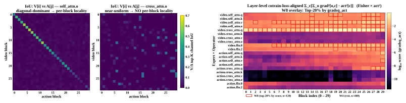
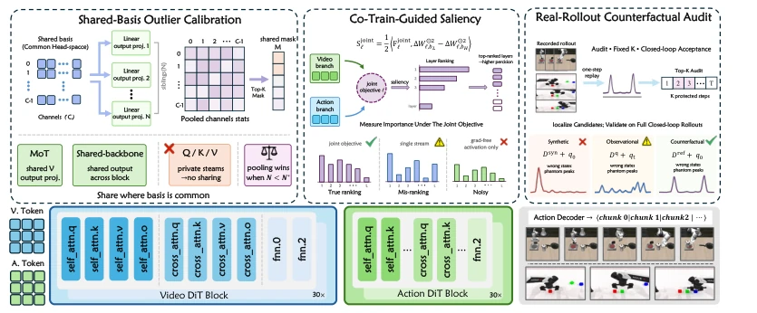
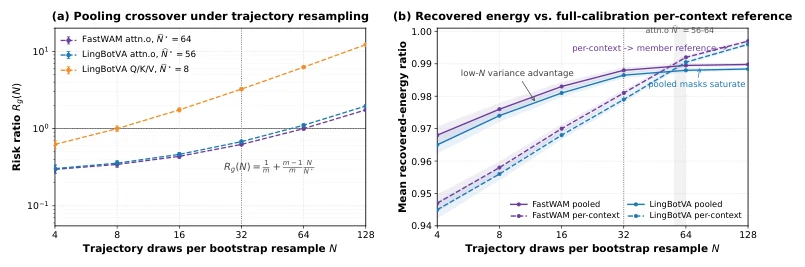
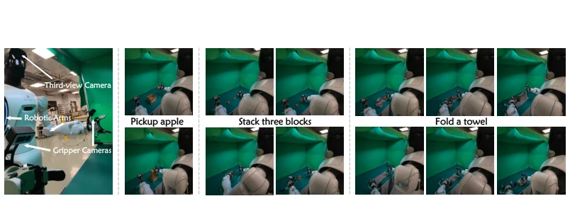

QuantWAMs attempts to quantify WAMs, but accurately identifies the pain points: closed-loop errors accumulate, and open-loop calibration is akin to carving a mark on a boat to find a lost sword. Most existing PTQ methods assume models are homogeneous and open-loop; directly applying them would be a disaster. The authors did not pursue fancy mixed precision, but instead rigorously focused on 'granularity'—structure, distribution, and targets must all align. Although simulation results are close to FP16, real robots were only tested 10 times, statistical significance is somewhat weak, and it relies on FP16 replay, so the deployment threshold is not low. However, transforming quantization from 'static calibration' to 'closed-loop auditing' is indeed a more sophisticated approach than simply compressing weights, at least it does not run closed-loop as open-loop.
研究动机Motivation
WAMs 联合预测视频与动作，闭环执行导致早期量化误差会传播到后续状态。现有 PTQ 方法如 GPTQ [Frantar et al., 2022] 和 SmoothQuant [Xiao et al., 2023] 依赖开环目标（如困惑度），假设模型同质且校准分布与部署一致。但 WAMs 是双流或共享骨干，早期误差会改变后续观测分布。静态单流代理可能分配错误精度，即使校准损失低。因此，量化决策必须匹配部署时的结构、分布和目标上下文，否则会产生‘幻影峰值’或坐标不兼容。
WAMs jointly predict video and actions; closed-loop execution causes early quantization errors to propagate to subsequent states. Existing PTQ methods such as GPTQ [Frantar et al., 2022] and SmoothQuant [Xiao et al., 2023] rely on open-loop objectives (e.g., perplexity), assuming models are homogeneous and calibration distributions match deployment. However, WAMs are dual-stream or share a backbone, where early errors alter subsequent observation distributions. Static single-stream proxies may assign incorrect precision even if calibration loss is low. Therefore, quantization decisions must match the structure, distribution, and target context at deployment; otherwise, 'phantom peaks' or coordinate incompatibility will occur.

Figure 4: V×A IoU matrices. Pairwise top-K channel IoU between video block i and action block j; self.o diagonal-dominant (per-block lo- cality), cross.o near-uniform.
QuantWAMs includes three core strategies. First, Shared-basis Outlier Calibration pools activation evidence only between coordinate-compatible modules, avoiding coordinate misalignment caused by shared Q/K/V across experts, unifying the basis via Hadamard rotation. Second, Co-training-objective Saliency utilizes empirical Fisher scores from video-action joint gradients to allocate weight precision, rather than single-stream or post-fusion, preserving coordinate-level interactions. Finally, Fixed-intervention Rollout Auditing uses FP16 closed-loop state replay to correct denoising step protection plans, rather than relying on synthetic distributions. The overall process first calibrates activation masks, then allocates weight precision, and finally audits timestep protection, ensuring optimal closed-loop performance under a constant budget.

Figure 2: Overview of QuantWAMs. Shared-basis calibration pools activation statistics only across coordinate-compatible modules; co-training-guided saliency allocates precision using joint video–action gradients; and fixed-intervention rollout auditing revises denoising-step schedules for coupled video and action DiT blocks.

Figure 3: Pooling lowers finite-sample risk and improves recovered Top-K energy under trajectory- level bootstrap resampling.
Fast-WAM and LingBot-VA were tested on RoboTwin 2.0 and LIBERO. Baselines include GPTQ, SmoothQuant, Atom, etc. Under W4A4 settings, QuantWAMs simulation success rate differs from FP16 by only 0.2-0.7%. Memory reduced to 29%, block-level speedup 1.4-1.6x. On the real robot AgiBot G2, the three-task success rate is 56.7%, slightly lower than FP16's 63.3%, but better than Atom*. Ablation studies show that shared basis, joint gradients, and fixed intervention replay all improve performance.

Figure 6: Real-world system AgiBot G2 and the task examples.